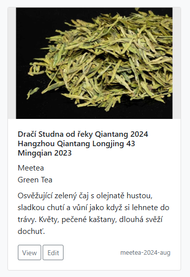

My Tea Collection
Publikováno:
Webová aplikace pro evidenci vaší čajové sbírky. Udržujte si sami pro sebe, i navzájem se svými přáteli, přehled o tom, které čaje vlastníte. Můžete také s kýmkoliv sdílet odkaz na konkrétní čaj, s veškerými jeho detaily.